Orbital Maneuvering Models¶
maneuvering <orbital-maneuver-model-name> maneuver_update_interval ... ... end_maneuvering
- maneuvering … end_maneuvering¶
Specifiy a model for executing orbital maneuvers in space.
Available Models:
Common Maneuvering Model Commands¶
- maneuver_update_interval <time-value>¶
The update interval at which finite maneuvering events are evaluated.
Default 1.0 s
Maneuvering Model Types¶
Simple Maneuvering Model¶
maneuvering simple delta_v ... maximum_acceleration ... maneuver_update_interval ... end_maneuvering
The default orbital maneuver model. delta-V is provided explicitly as an input (instead of providing mass properties and thrust). Finite maneuvers can be limited by a maximum acceleration. This model is representative of ion thrusters, and can be used when management of a specific delta-V budget is the primary consideration.
- delta_v <speed-value>¶
The total amount of “delta-V” available to the parent platform for performing maneuvers.
Default 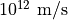.
- maximum_acceleration <acceleration-value>¶
The maximum acceleration available to perform finite maneuvers.
Default 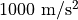.
Rocket Maneuvering Model¶
maneuvering rocket stage commands ... maneuver_update_interval ... end_maneuvering
The rocket orbital maneuver model expends delta-V according to the Tsiolkovsky rocket equation. Mass properties and thrust must be provided (see stage commands, below, for a description of valid stage inputs.
The rocket may be specified in more than one stage. In that case the mass properties and thrust must be provided for each stage separately. The first stage defined is the first one used, and it would be the first jettisoned using the perform staging.
For example, the following definition describes the Russian Proton “Breeze-M” booster and payload. It is defined in three stages: the first stage describes the auxiliary propellant tank (APT), that is jettisoned after two or three initial maneuvers; the second stage describes the remainder of the booster’s mass and propulsion; and the third stage describes a payload with the capability of performing on-orbit maneuvers:
maneuvering rocket
stage // breeze-M APT
specific_impulse 326 seconds
thrust 19620 newtons
empty_mass 1125 kg
fuel_mass 10920 kg
end_stage
stage // breeze-M upper stage
specific_impulse 326 seconds
thrust 19620 newtons
empty_mass 1125 kg
fuel_mass 8300 kg
end_stage
stage // payload with mr-107 aerojet small thrusters
specific_impulse 236 s
thrust 1028 newtons // assume x4
empty_mass 2000 kg
fuel_mass 500 kg // guess
end_stage
end_maneuvering
Stage Commands¶
stage specific_impulse ... thrust ... burn_rate ... exhaust_velocity ... initial_mass | total_mass ... final_mass | empty_mass ... propellant_mass | fuel_mass ... end_stage
Define one or more stages to be used by the rocket maneuvering model.
- specific_impulse <time-value>¶
Provide the specific impulse of the stage in vacuum, typically expressed in seconds.
Note
The specific impulse :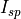 is related to the exhaust velocity, :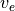, by the acceleration of gravity at sea level,
 , as follows:
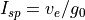.
, as follows:
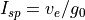.
- thrust <force-value>¶
Provide the total thrust (
 ) of the stage.
) of the stage.
- burn_rate <mass-flow-value>¶
Provide the burn (fuel depletion) rate (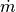).
- exhaust_velocity <speed-value>¶
Provide the propellant exhaust velocity ().
- initial_mass <mass-value>¶
- total_mass <mass-value>¶
Specify the initial_mass (), defined to be the propellant_mass plus the final_mass.
- final_mass <mass-value>¶
- empty_mass <mass-value>¶
Specify the final (empty) mass (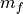), defined to be the initial_mass minus the propellant_mass.
- propellant_mass <mass-value>¶
- fuel_mass <mass-value>¶
Specify the propellant mass, defined to be the initial_mass minus the final_mass.
Note
The inputs total_mass, empty_mass, and fuel_mass can be also be used to specify mass properties for stages, in order to remain consistent with the inputs for WSF_GUIDED_MOVER. It is understood that fuel_mass represents all propellant (fuel and oxidizer) in the stage.
Physics Model¶
The rocket maneuvering model is governed by the Tsiolkovsky rocket equation. Applying this equation to a single maneuver:
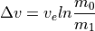
where is the magnitude of the change in velocity of the rocket, is the exhaust_velocity,  is the initial mass before execution of the maneuver, and is the final mass after execution of the maneuver.
is the initial mass before execution of the maneuver, and is the final mass after execution of the maneuver.
Defining a propellant mass 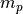 expended in the maneuver of duration  , it is clear that
, it is clear that
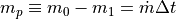
and equivalently,

Then, rewriting the rocket equation to remove , and manipulating to solve for the maneuver duration :
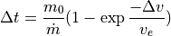
When performing a maneuver, checks are made to ensure that a sufficient fuel supply is available. As the maneuver is performed, propellant is deleted and the stage’s mass properties are updated.